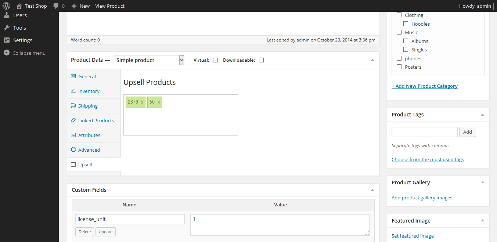
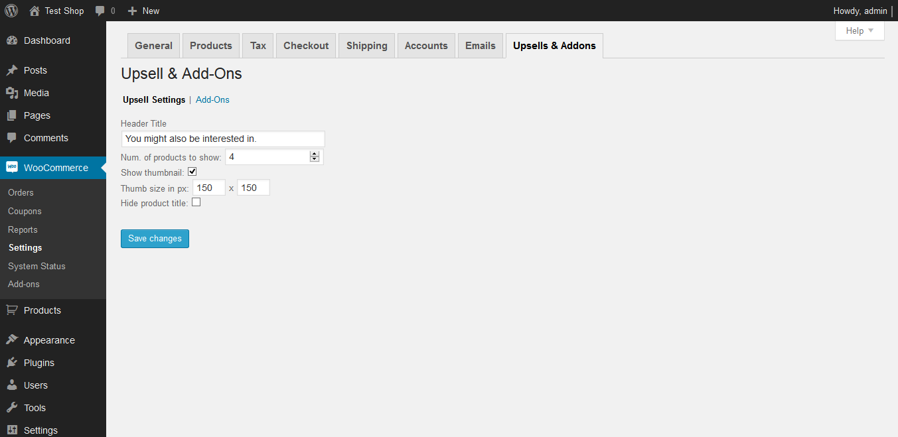
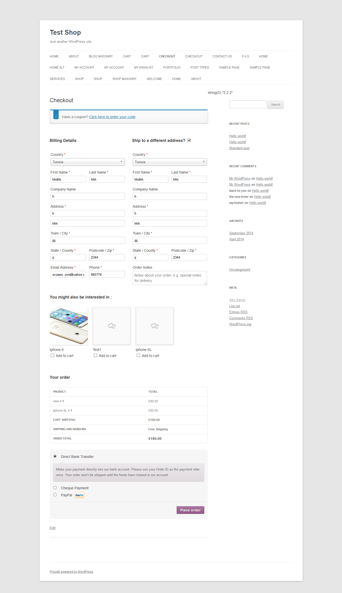
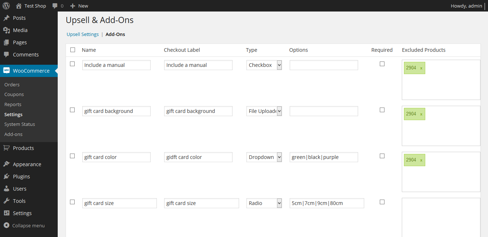
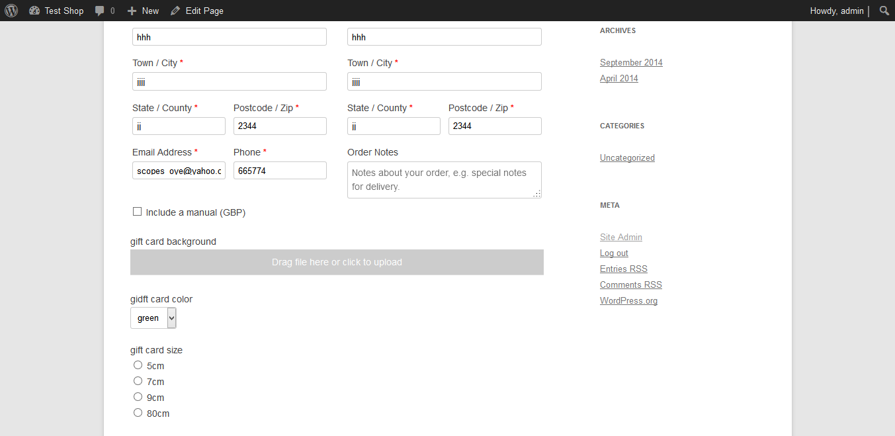

“Woocommerce Checkout Addons & Upsells ” Documentation by “Isaaac Oyelowo” v1.0
“Woocommerce Checkout Addons & Upsells”
Thank you for purchasing my Plugin. If you have any questions that are beyond the scope of this help file, please feel free to email via my user page contact form
here. Thanks so much!
Woocommerce Checkout Addons & Upsells is a Woocommerce extension that allows product upsells to be displayed on the checkout page and also additional checkout fields.
Product upsells are displayed on the checkout page and users can simply add the product to their order by just simply checking the checkbox.
Available Addon fields are :
Text
Radio
Checkbox
Multi Checkbox
Dropdown
Multi Select
Text Area
File Uploader
How to Use :
Download the plugin from codecanyon.net and upload it through your plugins page
Navigate to the plugins page and activate your plugin.
Setting Up Upsells
Go to "add a product" and add upsells for each product.

The way the upsells appear on the checkout page can be configured on the "Upsells & Addons" tab of Woocommerce settings

The Upsells appear on checkout page this way :

Setting Up Add-Ons
On the "Upsells & Addons" tab of Woocommerce settings,click on "add-ons" then you can add the addons you want.

This is what the addons look like on the front-end

Woocommerce Checkout Addons & Upsells v1.0